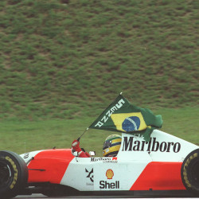
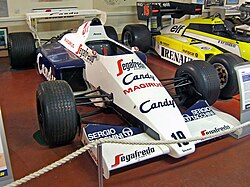
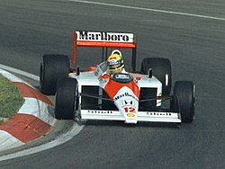

Maior piloto da história do automobilismo
Ayrton Senna da Silva foi um piloto de Fórmula 1, empresário e filantropo brasileiro. Senna foi campeão mundial da categoria três vezes, em 1988, 1990 e 1991. Começou sua carreira competindo no kart em 1973 e em carros de fórmula em 1981, quando venceu as Fórmulas Ford 1600 e 2000. Em 1983, conquistou o título do Campeonato Britânico de Fórmula 3, batendo vários recordes.
Seu desempenho impulsionou sua ascensão à Fórmula 1, fazendo sua primeira aparição na categoria no Grande Prêmio do Brasil de 1984 pela equipe Toleman-Hart. Na primeira temporada, Senna pontuou em cinco corridas, fechando o ano com treze pontos e a nona posição na classificação geral dos pilotos. No ano seguinte, ingressou na Lotus-Renault, equipe pela qual venceu seis Grandes Prêmios ao longo de três temporadas.
Em 1988, juntou-se ao francês Alain Prost na McLaren-Honda, com quem teve grande rivalidade. Senna venceu oito etapas daquela temporada e sagrou-se campeão mundial pela primeira vez. Após a polêmica final de 1989 com Prost, que resultou na sua segunda colocação no campeonato, retomou o título em 1990, vencendo novamente em 1991, tornando-se o piloto mais jovem a conquistar um tricampeonato na Fórmula 1 até então. Em 1993, Senna foi vice-campeão, vencendo cinco corridas.
Transferiu-se para a Williams em 1994, onde disputou apenas três etapas, a última delas sendo o Grande Prêmio de San Marino, onde sofreu um acidente fatal no Circuito de Ímola. Ao todo, Senna participou de 161 Grandes Prêmios na Fórmula 1, alcançando 41 vitórias, 80 pódios, 65 poles position e 19 voltas mais rápidas.
Além das corridas, Senna dedicava-se a jet skis, motos, aeromodelos e principalmente helicópteros. Também administrava diversas marcas e empreendimentos, além de patrocinar programas de assistência filantrópica, principalmente ligados a crianças carentes. Após sua morte, sua irmã Viviane Senna fundou o Instituto Ayrton Senna, uma organização não governamental que oferece oportunidades de desenvolvimento humano a crianças e jovens de baixa renda. Além disso, o personagem Senninha foi criado para atingir o público infantil com os ideais do piloto, como superação, dedicação e gosto pela vitória.
Sua morte, funeral e velório provocaram uma das maiores comoções da história do Brasil, além de repercussão mundial. Em pesquisas feitas com jornalistas especializados, pilotos e torcedores, Senna foi amplamente considerado o melhor piloto da história da Fórmula 1 e um dos maiores automobilistas de todos os tempos. Em 1999, foi eleito pela revista Isto É o esportista do século XX no Brasil. No auge de sua carreira, era considerado o maior ídolo brasileiro, posto que mantém mesmo três décadas após sua morte.